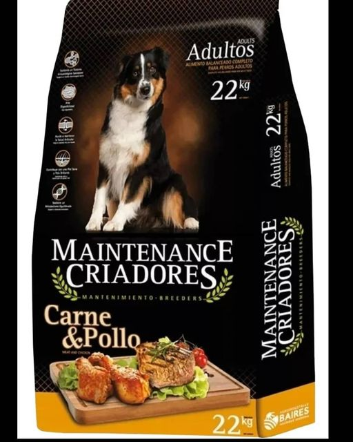
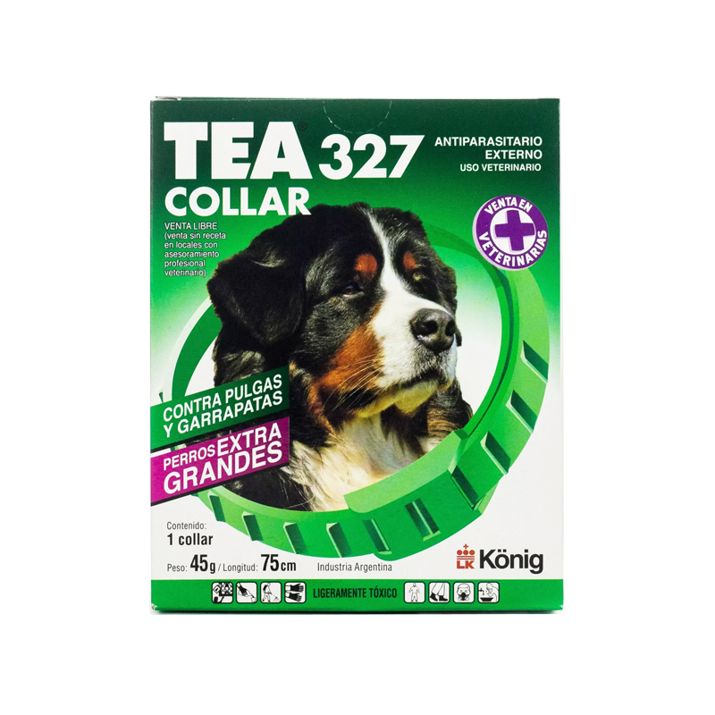
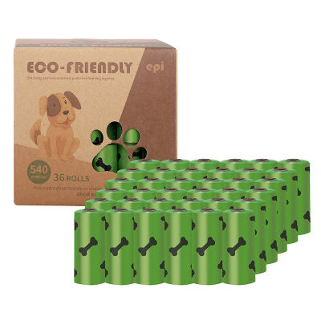
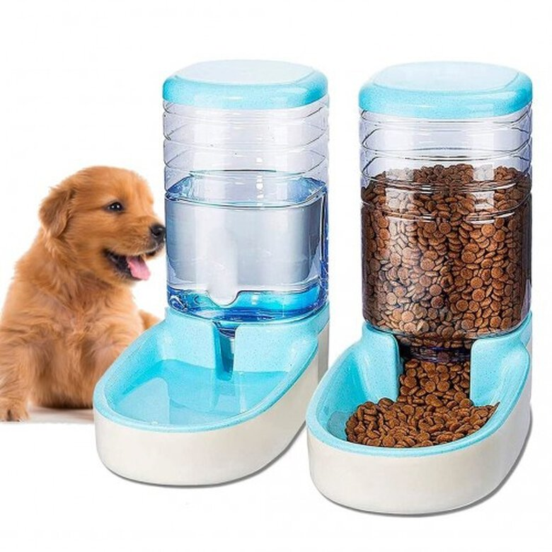

Comida de Perro
Maintenance Criadores Perro Adulto X 22 Kg

Alimento pensado para perros adultos de todas las razas y tamaños a partir de 12 meses de edad con actividad física moderada a alta. Sus principales características son: alta palatabilidad, protección de la salud del pelo y la piel, fortalecimiento de huesos y articulaciones e incremento de las defensas.
Collar Antipulgas Tea 327 Perros Grandes
Descripcion de mi post

Exclusiva matriz plástica de ingeniería autosaturada con micropartículas insecticidas que son liberadas en forma continua hacia la superficie del collar, funcionando como una talquera.
Desde la superficie del collar las particulas insecticidas se esparcen por todo el cuerpo del animal eliminando pulgas y garrapatas.
TEA 327 COLLAR, es un collar de matriz plástica pulguicida y piojicida para perros y gatos que protege a tu mascota durante 5 meses de todo tipo de parásitos externos, actuando también como garrapaticida en caninos.
Set de juguetes para perros
Descripcion de mi post

Kit de juguetes todo en uno para tu mascota, cuenta con varios tipos para un mayor entretenimiento de su mascota, ademas estan echos de materiales duraderos
Bolsa de residuos para mascotas
Descripcion de mi post

Repuesto Bolsas Sanitarias X3 Rollos Para Mascotas Perros K9
Comedero y bebedero automatico
Descripcion de mi post

Como el recipiente es transparente, podrás controlar de un simple vistazo cuánta agua queda y rellenarla cuando sea preciso.
Este práctico dispensador de agua está fabricado con plástico, por lo que su limpieza es sencilla.
La abertura de la parte inferior permite que el agua fluya hasta el recipiente azul y que su nivel de llenado se mantenga constante.
El borde de goma antideslizante de la base evita que se deslice sobre suelos lisos y que permanezca en su lugar.